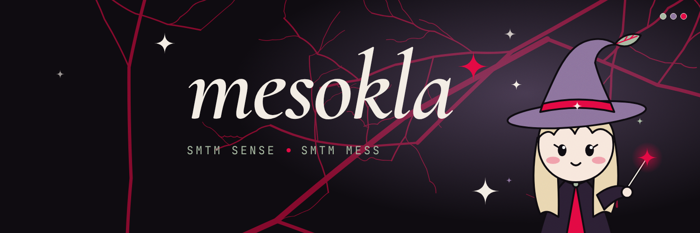
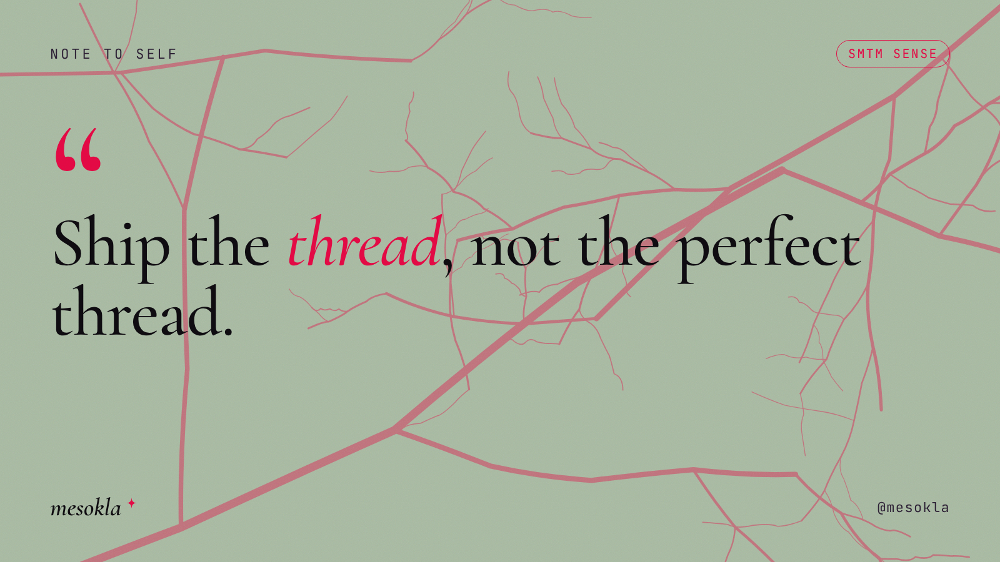
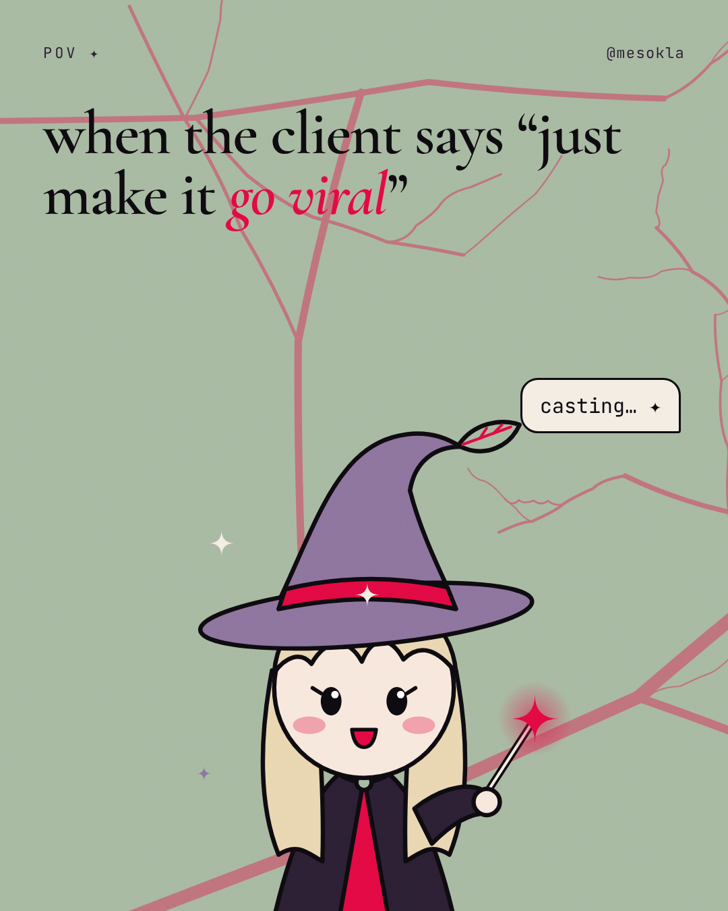
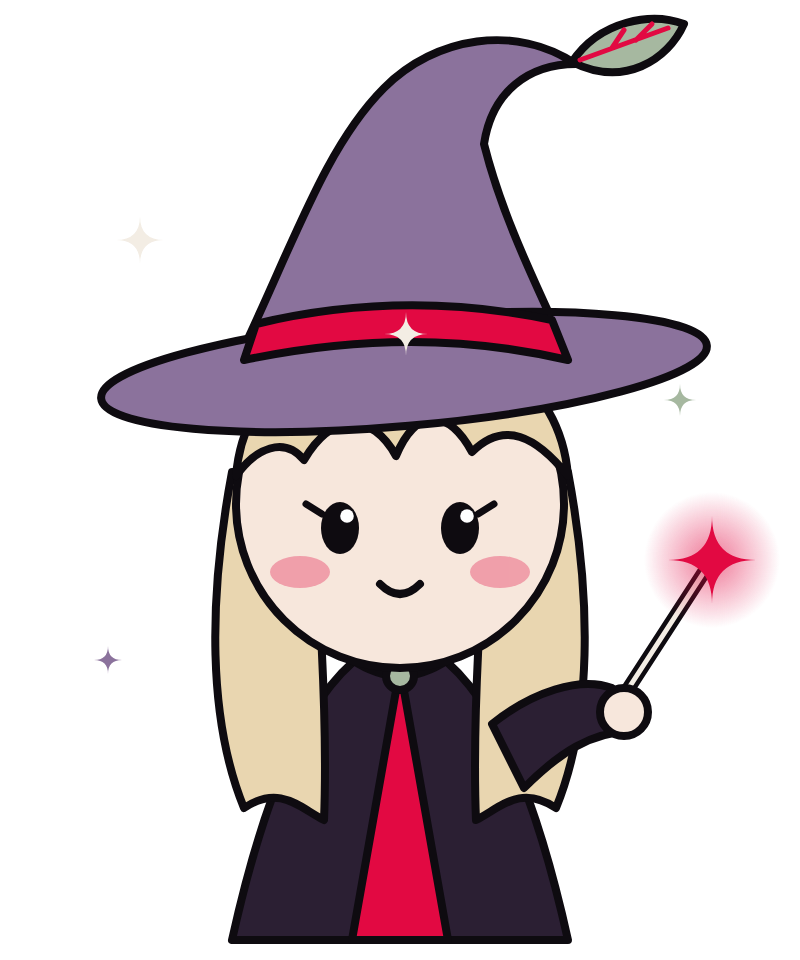

<title>mesokla Brandbook</title>
<meta name="claude:viewport-fit-sides" content="cover">
<link rel="preconnect" href="https://fonts.googleapis.com">
<link rel="stylesheet" href="https://fonts.googleapis.com/css2?family=Cormorant+Garamond:ital,wght@0,500;0,600;1,500;1,600&family=Inter:wght@400;500;600&family=JetBrains+Mono:wght@400;500&display=swap">
<style>
/* Layout: a dark night-garden grimoire — chapters stacked like spell pages, each opening with a mono "page" label. Single dark theme by choice: the brand lives on X dark mode. */
:root{
  --ink:#0E0B10; --plum:#2B1F33; --plum-2:#1A1420; --bone:#F3EDE4; --muted:#A79DAE;
  --leaf:#A6B8A0; --violet:#8B729C; --crimson:#E20942;
  --line:rgba(243,237,228,.12);
  --serif:"Cormorant Garamond",Georgia,serif; --sans:"Inter",system-ui,sans-serif; --mono:"JetBrains Mono",ui-monospace,monospace;
  color-scheme:dark;
}
*{box-sizing:border-box}
body{background:var(--ink);color:var(--bone);font-family:var(--sans);font-size:16px;line-height:1.6;margin:0}
.wrap{max-width:1180px;margin:0 auto;padding-left:max(16px,env(safe-area-inset-left,0px));padding-right:max(16px,env(safe-area-inset-right,0px))}
section{padding-block:88px;border-top:1px solid var(--line)}
.page{font-family:var(--mono);font-size:12px;letter-spacing:.2em;text-transform:uppercase;color:var(--leaf);display:flex;gap:12px;align-items:center}
.page::before{content:"";width:10px;height:10px;background:var(--crimson);-webkit-mask:var(--star) center/contain no-repeat;mask:var(--star) center/contain no-repeat}
:root{--star:url("data:image/svg+xml,%3Csvg xmlns='http://www.w3.org/2000/svg' viewBox='-1 -1 2 2'%3E%3Cpath d='M0-1Q0 0 1 0Q0 0 0 1Q0 0-1 0Q0 0 0-1Z'/%3E%3C/svg%3E")}
h1,h2,h3{font-family:var(--serif);font-weight:600;line-height:1;letter-spacing:-.015em;text-wrap:balance;margin:0}
h2{font-size:clamp(40px,6vw,72px);margin:18px 0 18px}
h2 em,h1 em{color:var(--crimson);font-weight:500}
h3{font-size:30px;margin-bottom:8px}
p{margin:0;max-width:65ch;color:#D9D1DD}
.lead{font-size:19px;color:var(--bone)}
.grid{display:grid;gap:24px}
.mono{font-family:var(--mono)}
img,video{max-width:100%;display:block}
.shot{border-radius:14px;overflow:hidden;border:1px solid var(--line);background:var(--plum-2)}
figure{margin:0;display:flex;flex-direction:column;gap:12px;min-width:0}
figcaption{font-size:14px;color:var(--muted)}
figcaption b{color:var(--bone);font-weight:600}

/* hero */
.hero{position:relative;overflow:hidden;padding-block:72px 40px}
.hero .bg{position:absolute;inset:0;background:radial-gradient(50% 70% at 75% 45%,rgba(139,114,156,.35),transparent 70%),url(assets/veins-crimson.svg) center/cover;opacity:.5}
.hero .wrap{position:relative;display:grid;grid-template-columns:1.3fr 1fr;gap:32px;align-items:center}
.wm{font-family:var(--serif);font-style:italic;font-weight:600;font-size:clamp(84px,14vw,180px);line-height:.85;letter-spacing:-.03em}
.wm span{display:inline-block;width:.3em;height:.3em;background:var(--crimson);-webkit-mask:var(--star) center/contain no-repeat;mask:var(--star) center/contain no-repeat;vertical-align:top;margin:.06em 0 0 .04em}
.duo{margin-top:22px;display:flex;flex-wrap:wrap;gap:10px 18px;font-family:var(--mono);font-size:14px;letter-spacing:.2em;text-transform:uppercase}
.duo .s{color:var(--leaf)} .duo .m{color:var(--crimson)}
.hero p{margin-top:26px}
.hero img.mesy{width:100%;max-width:420px;justify-self:center;animation:bob 3s ease-in-out infinite}
@keyframes bob{50%{transform:translateY(-10px) rotate(-1.5deg)}}

/* palette */
.pal{grid-template-columns:repeat(3,minmax(0,1fr))}
.sw{border-radius:16px;padding:22px;min-height:230px;display:flex;flex-direction:column;justify-content:space-between;color:var(--ink)}
.sw .n{font-family:var(--serif);font-size:34px;font-weight:600;line-height:1}
.sw .r{font-size:14px;line-height:1.45;max-width:30ch}
.sw .h{font-family:var(--mono);font-size:13px;letter-spacing:.06em;display:flex;justify-content:space-between}
.sup{grid-template-columns:repeat(3,minmax(0,1fr));margin-top:16px}
.sup .sw{min-height:120px}
.ratio{display:flex;height:44px;border-radius:999px;overflow:hidden;margin-top:28px;border:1px solid var(--line)}
.ratio div{display:grid;place-items:center;font-family:var(--mono);font-size:12px;color:var(--ink)}
.pairs{grid-template-columns:repeat(4,minmax(0,1fr));margin-top:28px}
.pair{border-radius:12px;padding:18px;font-family:var(--serif);font-size:28px;font-style:italic;font-weight:600;line-height:1}
.pair small{display:block;margin-top:10px;font-family:var(--mono);font-style:normal;font-size:11px;letter-spacing:.08em;font-weight:400}

/* type */
.type{grid-template-columns:repeat(3,minmax(0,1fr))}
.tcard{border:1px solid var(--line);border-radius:16px;padding:24px;display:flex;flex-direction:column;gap:14px;min-width:0}
.tcard .spec{font-family:var(--mono);font-size:12px;color:var(--muted);letter-spacing:.06em}

/* motif */
.motif{grid-template-columns:1.4fr 1fr;align-items:stretch}
.vein{border-radius:16px;min-height:260px;background:var(--leaf) url(assets/veins-crimson.svg) center/cover}
.stars{border-radius:16px;background:var(--plum);display:flex;align-items:center;justify-content:center;gap:28px;padding:24px;min-height:260px}
.stars i{display:block;background:var(--bone);-webkit-mask:var(--star) center/contain no-repeat;mask:var(--star) center/contain no-repeat}

/* profile mock */
.xmock{max-width:640px;border:1px solid var(--line);border-radius:18px;overflow:hidden;background:#000}
.xmock .ban{aspect-ratio:3/1;background:url(out/banner-night.png) center/cover}
.xmock .body{padding:0 20px 22px;position:relative}
.xmock .av{width:24%;aspect-ratio:1;border-radius:50%;margin-top:-12%;border:4px solid #000;background:linear-gradient(135deg,var(--violet),var(--plum));box-shadow:0 0 0 3px var(--crimson);display:grid;place-items:center;font-family:var(--mono);font-size:11px;color:var(--bone);text-align:center;line-height:1.3}
.xmock .nm{font-weight:700;font-size:20px;margin-top:12px}
.xmock .hd{color:#71767B;font-size:15px}
.xmock .bio{margin-top:12px;font-size:15px;line-height:1.45;color:#E7E9EA;white-space:pre-line}
.xmock .bio a{color:#1D9BF0;text-decoration:none}
.profile{grid-template-columns:minmax(0,640px) 1fr;align-items:start;gap:40px}
.copy{border:1px solid var(--line);border-radius:14px;padding:18px;display:flex;flex-direction:column;gap:8px}
.copy .k{font-family:var(--mono);font-size:11px;letter-spacing:.16em;text-transform:uppercase;color:var(--leaf)}
.copy pre{margin:0;font-family:var(--sans);font-size:15px;white-space:pre-wrap;color:var(--bone)}
.banners{grid-template-columns:1fr;margin-top:40px}

/* posts */
.posts{grid-template-columns:repeat(2,minmax(0,1fr))}
.tag{display:inline-block;font-family:var(--mono);font-size:11px;letter-spacing:.12em;text-transform:uppercase;border:1px solid currentColor;border-radius:999px;padding:2px 10px;margin-right:6px}

/* pillars */
.pillars{grid-template-columns:repeat(4,minmax(0,1fr))}
.pil{border-radius:16px;padding:22px;display:flex;flex-direction:column;gap:10px;min-height:230px}
.pil h3{font-style:italic}
.pil p{color:inherit;opacity:.88;font-size:15px}

/* mascot */
.mascot{grid-template-columns:1fr 1.2fr;gap:40px;align-items:center}
.poses{grid-template-columns:repeat(4,minmax(0,1fr));margin-top:36px}
.pose{background:var(--plum);border-radius:16px;padding:12px 12px 14px;text-align:center}
.pose .k{font-family:var(--mono);font-size:12px;color:var(--leaf);letter-spacing:.1em}
.rules{grid-template-columns:1fr 1fr;margin-top:36px}
.rules ul{margin:10px 0 0;padding-left:20px;color:#D9D1DD}
.rules li{margin-bottom:6px}
.do h3{color:var(--leaf)} .dont h3{color:var(--crimson)}
.anat{list-style:none;padding:0;margin:20px 0 0;display:grid;gap:10px}
.anat li{display:grid;grid-template-columns:120px 1fr;gap:14px;font-size:15px}
.anat b{font-family:var(--mono);font-weight:400;color:var(--violet);font-size:13px}
.anim{grid-template-columns:1.3fr 1fr;align-items:center;margin-top:48px;gap:32px}

/* skill */
.cmds{grid-template-columns:repeat(2,minmax(0,1fr))}
.cmd{background:var(--plum-2);border:1px solid var(--line);border-radius:14px;padding:18px;min-width:0}
.cmd .k{font-family:var(--mono);font-size:11px;letter-spacing:.16em;text-transform:uppercase;color:var(--violet)}
.cmd p{margin-top:8px;font-size:15px}
.cmd code{display:block;margin-top:10px;font-family:var(--mono);font-size:12.5px;color:var(--leaf);overflow-x:auto;white-space:pre}
footer{padding-block:48px;border-top:1px solid var(--line);font-family:var(--mono);font-size:12px;color:var(--muted);letter-spacing:.08em}

@media (max-width:900px){
  .hero .wrap,.motif,.profile,.mascot,.anim,.rules{grid-template-columns:1fr}
  .pal,.sup,.type,.pillars,.poses{grid-template-columns:repeat(2,minmax(0,1fr))}
  .posts,.cmds{grid-template-columns:1fr}
  .pairs{grid-template-columns:repeat(2,minmax(0,1fr))}
}
@media (max-width:520px){ .pal,.sup,.type,.pillars{grid-template-columns:1fr} section{padding-block:60px} }
@media (prefers-reduced-motion:reduce){ .hero img.mesy{animation:none} }
</style>

<header class="hero">
  <div class="bg"></div>
  <div class="wrap">
    <div>
      <div class="page">brandbook v1 · x / twitter</div>
      <div class="wm" style="margin-top:22px">mesokla<span></span></div>
      <div class="duo"><span class="s">smtm sense</span><span>✦</span><span class="m">smtm mess</span></div>
      <p class="lead">Айдентика побудована на твоєму ж біо: інколи сенс, інколи хаос. Шавлієвий листок відповідає за сенс, малиновий за хаос, фіолетовий за магію між ними. Прожилки листка з референсу стали фірмовим патерном, чотирипроменева зірка з твого старого банера стала підписом, а маленька відьмочка Мессі тепер маскот.</p>
    </div>
    
  </div>
</header>

<main>
<section><div class="wrap">
  <div class="page">01 · колір</div>
  <h2>Три кольори, <em>три настрої</em></h2>
  <p class="lead">Основа взята з твоєї палітри один в один. До неї додано три нейтральні, щоб усе нормально жило на темній темі X.</p>
  <div class="grid pal" style="margin-top:32px">
    <div class="sw" style="background:var(--leaf)"><div class="n">Leaf Skin</div><div class="r">Сенс. Фреймворки, тули, плейбуки. Спокійний фон для корисного контенту.</div><div class="h"><span>#A6B8A0</span><span>166 184 160</span></div></div>
    <div class="sw" style="background:var(--violet);color:var(--bone)"><div class="n">Muted Violet</div><div class="r">Магія. Колаби, анонси, капелюх Мессі.</div><div class="h"><span>#8B729C</span><span>139 114 156</span></div></div>
    <div class="sw" style="background:var(--crimson);color:var(--bone)"><div class="n">Electric Crimson</div><div class="r">Хаос і акцент. Виділене слово, CTA, мемні пости. Дозувати.</div><div class="h"><span>#E20942</span><span>226 9 66</span></div></div>
  </div>
  <div class="grid sup">
    <div class="sw" style="background:var(--ink);color:var(--bone);border:1px solid var(--line)"><div class="n" style="font-size:24px">Night Ink</div><div class="h"><span>#0E0B10</span><span>базовий фон</span></div></div>
    <div class="sw" style="background:var(--plum);color:var(--bone)"><div class="n" style="font-size:24px">Deep Plum</div><div class="h"><span>#2B1F33</span><span>плашки, плащ</span></div></div>
    <div class="sw" style="background:var(--bone)"><div class="n" style="font-size:24px">Bone</div><div class="h"><span>#F3EDE4</span><span>текст на темному</span></div></div>
  </div>
  <div class="ratio" aria-label="Пропорції кольорів">
    <div style="flex:55;background:var(--ink);color:var(--bone)">ink 55%</div>
    <div style="flex:20;background:var(--leaf)">leaf 20%</div>
    <div style="flex:15;background:var(--violet);color:var(--bone)">violet 15%</div>
    <div style="flex:10;background:var(--crimson);color:var(--bone)">10%</div>
  </div>
  <div class="grid pairs">
    <div class="pair" style="background:var(--ink);color:var(--bone)">sense <em style="color:var(--crimson)">mess</em><small style="color:var(--leaf)">BONE + CRIMSON НА INK</small></div>
    <div class="pair" style="background:var(--leaf);color:var(--ink)">sense <em style="color:var(--crimson)">mess</em><small>INK + CRIMSON НА LEAF</small></div>
    <div class="pair" style="background:var(--violet);color:var(--bone)">sense <em style="color:var(--ink)">mess</em><small>BONE + INK НА VIOLET</small></div>
    <div class="pair" style="background:var(--crimson);color:var(--bone)">sense <em style="color:var(--ink)">mess</em><small>BONE + INK НА CRIMSON</small></div>
  </div>
  <p style="margin-top:18px;font-size:14px;color:var(--muted)">Чого уникати: малиновий текст на фіолетовому і білий текст на шавлієвому, бо обидві пари погано читаються.</p>
</div></section>

<section><div class="wrap">
  <div class="page">02 · шрифти</div>
  <h2>Відьомський серіф, <em>чистий</em> гротеск</h2>
  <div class="grid type" style="margin-top:28px">
    <div class="tcard"><div class="spec">DISPLAY · CORMORANT GARAMOND 600 / ITALIC</div><div style="font-family:var(--serif);font-style:italic;font-weight:600;font-size:64px;line-height:.9">mesokla</div><p style="font-size:14px">Вордмарк, заголовки, цитати. Курсивом виділяй одне слово малиновим.</p></div>
    <div class="tcard"><div class="spec">BODY · INTER 400–600</div><div style="font-size:26px;font-weight:500;line-height:1.25">Post when your audience is awake.</div><p style="font-size:14px">Списки, підзаголовки, пояснення. Мінімум 32px на візуалі 1600×900.</p></div>
    <div class="tcard"><div class="spec">UTILITY · JETBRAINS MONO</div><div style="font-family:var(--mono);font-size:18px;letter-spacing:.18em;text-transform:uppercase;color:var(--leaf)">🧵 thread · 1/9</div><p style="font-size:14px">Кікери, хендл, нумерація, дати. Капсом і з розрядкою, бо це web3-нотка.</p></div>
  </div>
</div></section>

<section><div class="wrap">
  <div class="page">03 · графічні елементи</div>
  <h2>Прожилки і <em>зірки</em></h2>
  <div class="grid motif" style="margin-top:28px">
    <figure><div class="vein" role="img" aria-label="Патерн малинових прожилок на шавлієвому фоні"></div><figcaption><b>Прожилки листка.</b> Наскрізний патерн усіх фонів. На темному малинові з прозорістю 35%, на шавлієвому 40%, на малиновому чорнильні 20%. Текст ніколи не має перекриватися товстою прожилкою.</figcaption></figure>
    <figure><div class="stars" aria-label="Чотирипроменеві зірки"><i style="width:22px;height:22px"></i><i style="width:64px;height:64px;background:var(--crimson)"></i><i style="width:36px;height:36px;background:var(--leaf)"></i></div><figcaption><b>Зірка ✦.</b> Перейшла з твого старого банера. Ставиться після вордмарка як підпис, заміняє буліти, мерехтить в анімаціях. На один візуал не більше чотирьох.</figcaption></figure>
  </div>
</div></section>

<section><div class="wrap">
  <div class="page">04 · профіль</div>
  <h2>Як виглядає <em>профіль</em></h2>
  <div class="grid profile" style="margin-top:28px">
    <div class="xmock">
      <div class="ban" role="img" aria-label="Банер Night"></div>
      <div class="body">
        <div class="av">твоє фото<br>+ малинове<br>кільце</div>
        <div class="nm">mesokla ✦</div>
        <div class="hd">@mesokla</div>
        <div class="bio">cc ✦ web3 marketer <a>@solus_group</a>
smtm sense, smtm mess 🧪
dm for collab</div>
      </div>
    </div>
    <div class="grid" style="gap:14px">
      <div class="copy"><div class="k">ім'я</div><pre>mesokla ✦</pre></div>
      <div class="copy"><div class="k">біо</div><pre>cc ✦ web3 marketer @solus_group
smtm sense, smtm mess 🧪
dm for collab</pre></div>
      <div class="copy"><div class="k">аватар</div><pre>Фото лишається, бо обличчя продає краще за будь-який логотип. Тло з легким фіолетовим тоном або тонке малинове кільце в Canva, щоб аватар зв'язувався з банером.</pre></div>
      <div class="copy"><div class="k">закріп</div><pre>Пост-візитка у форматі sense vs mess або обкладинка треду з Мессі.</pre></div>
    </div>
  </div>
  <div class="grid banners">
    <figure><figcaption><b>Night</b> · основний банер, працює в темній темі X. Нижній лівий кут під аватар лишається порожнім.</figcaption></figure>
    <figure><figcaption><b>Leaf</b> · для сезону корисного контенту і серій тредів.</figcaption></figure>
    <figure><figcaption><b>Crimson</b> · на час кампанії, запуску чи івенту, на тиждень-два.</figcaption></figure>
  </div>
</div></section>

<section><div class="wrap">
  <div class="page">05 · рубрики</div>
  <h2>Колір підказує, <em>що це за пост</em></h2>
  <p class="lead">Кожна рубрика має свою тему фону. Фоловер ще до прочитання по кольору бачить, корисний це пост чи мемний.</p>
  <div class="grid pillars" style="margin-top:28px">
    <div class="pil" style="background:var(--leaf);color:var(--ink)"><span class="tag">theme=leaf</span><h3>Sense</h3><p>Фреймворки, тули, чеклісти, розбори кампаній. Пости, які зберігають.</p></div>
    <div class="pil" style="background:var(--crimson);color:var(--bone)"><span class="tag">theme=crimson</span><h3>Mess</h3><p>Факапи, POV-меми, будні маркетолога. Пости, якими діляться.</p></div>
    <div class="pil" style="background:var(--violet);color:var(--bone)"><span class="tag">theme=violet</span><h3>Magic</h3><p>Колаби, спейси, анонси, @solus_group. Пости, які піднімають статус.</p></div>
    <div class="pil" style="background:var(--plum);color:var(--bone)"><span class="tag">theme=night</span><h3>Night notes</h3><p>Хот-тейки, цитати, думки о другій ночі. Пости, на які відповідають.</p></div>
  </div>
</div></section>

<section><div class="wrap">
  <div class="page">06 · візуали до постів</div>
  <h2>Сім шаблонів, <em>усі редагуються</em></h2>
  <p class="lead">16:9 (1600×900) для стрічки X і 4:5 (1080×1350) для мемів і крос-постингу в Instagram. Текст підставляється однією командою, деталі в розділі 08.</p>
  <div class="grid posts" style="margin-top:28px">
    <figure><figcaption><b>quote</b> · хот-тейк або цитата. <span class="tag">night</span> Одне слово курсивом малиновим.</figcaption></figure>
    <figure><figcaption><b>thread</b> · обкладинка першого твіту треду. Мессі праворуч, заголовок до 8 слів.</figcaption></figure>
    <figure><figcaption><b>sense-mess</b> · фірмовий формат, побудований на біо. Порівняння «як треба / як буває». Найбільш впізнаваний шаблон.</figcaption></figure>
    <figure><figcaption><b>list</b> · «grimoire», списки з 3–6 пунктів. Пости, які зберігають.</figcaption></figure>
    <figure><figcaption><b>collab</b> · mesokla × партнер, спейс, івент, дата.</figcaption></figure>
    <figure><figcaption><b>quote · leaf</b> · той самий шаблон в іншій темі. Теми: night, leaf, violet, crimson, bone.</figcaption></figure>
    <figure style="grid-column:1/-1;max-width:440px"><figcaption><b>meme</b> · POV-реакція Мессі, 4:5. Пози і текст у бульбашці можна змінювати.</figcaption></figure>
  </div>
</div></section>

<section><div class="wrap">
  <div class="page">07 · маскот</div>
  <div class="grid mascot">
    
    <div>
      <h2>Знайомся, це <em>Мессі</em></h2>
      <p class="lead">Ім'я складається з mesokla і mess. Маленька відьмочка-маркетологиня: капелюх з листочком, малинова паличка, плащ з малиновою підкладкою. Вона чаклує охоплення, варить контент-план і інколи все підпалює.</p>
      <ul class="anat">
        <li><b>капелюх</b><span>Muted Violet, малинова стрічка, зірка, шавлієвий листок з прожилками на кінчику</span></li>
        <li><b>волосся</b><span>Пшеничне #E9D6B0, відсилка до тебе. Єдиний колір поза палітрою, тільки для Мессі</span></li>
        <li><b>паличка</b><span>Малинова зірка з сяйвом, головна «точка дії» для анімацій</span></li>
        <li><b>стиль</b><span>Плаский векторний стікер, чорний контур 4px, без градієнтів (крім сяйва)</span></li>
      </ul>
    </div>
  </div>
  <div class="grid poses">
    <div class="pose"><div class="k">default · впевнена</div></div>
    <div class="pose"><div class="k">happy · вийшло!</div></div>
    <div class="pose"><div class="k">wow · шо?!</div></div>
    <div class="pose"><div class="k">content · задоволена</div></div>
  </div>
  <div class="grid rules">
    <div class="do"><h3>Можна</h3><ul><li>Обкладинки тредів, меми, реакції, стікери в коментарях</li><li>Обрізати по пояс, щоб вона «визирала» з краю кадру</li><li>Нові пози через шари SVG: очі, рот, рука з паличкою</li><li>Інтро і аутро відео, кінцева заставка з CTA</li></ul></div>
    <div class="dont"><h3>Не можна</h3><ul><li>Перефарбовувати капелюх чи плащ в інші кольори</li><li>Розтягувати, давати тінь, обводку чи 3D</li><li>Ставити її у кожен пост: 1 з 3–4 візуалів, інакше набридне</li><li>Ставити поверх тексту або на малиновий фон без контуру</li></ul></div>
  </div>
  <div class="grid anim">
    <figure><video class="shot" src="out/intro.mp4" autoplay muted loop playsinline controls aria-label="Анімоване інтро: Мессі вилітає знизу, з'являється вордмарк"></video><figcaption><b>intro.mp4</b> · 4 секунди, 1600×900. Мессі вилітає знизу, блимає, вордмарк проявляється по літерах.</figcaption></figure>
    <div>
      <h3>Анімація</h3>
      <p>SVG маскота розбитий на шари з id: <span class="mono">m-hat</span>, <span class="mono">m-eyes-open</span>, <span class="mono">m-eyes-closed</span>, <span class="mono">m-mouth-open</span>, <span class="mono">m-arm</span>, <span class="mono">m-wand</span>, <span class="mono">m-sparkles</span>. Його можна імпортувати у Figma, After Effects, Jitter чи Rive і анімувати по частинах.</p>
      <p style="margin-top:12px">Базові рухи: погойдування на 2с, кліпання кожні 3–4с, спалах зірки на паличці перед появою тексту, мерехтіння зірок.</p>
    </div>
  </div>
</div></section>

<section><div class="wrap">
  <div class="page">08 · скіл</div>
  <h2>Як цим <em>користуватися</em></h2>
  <p class="lead">Увесь пак лежить у репозиторії як скіл <span class="mono">mesokla-brand</span>. Напиши Claude, що потрібно, і він збере візуал у твоєму стилі.</p>
  <div class="grid cmds" style="margin-top:28px">
    <div class="cmd"><div class="k">хот-тейк</div><p>«Зроби візуал до твіту: community is not your audience»</p><code>node scripts/render.mjs quote out/x.png \
  "text=Your community is *your product*."</code></div>
    <div class="cmd"><div class="k">тред</div><p>«Обкладинка для треду про запуск токена, 7 твітів»</p><code>node scripts/render.mjs thread out/t.png \
  "title=How to launch *without* a dead Discord" count="1 / 7"</code></div>
    <div class="cmd"><div class="k">sense vs mess</div><p>«Зроби sense vs mess про KOL-кампанії»</p><code>node scripts/render.mjs sense-mess out/sm.png \
  "sense=Brief with KPIs|Mid-tier KOLs" "mess=Pay for a tweet|Pray"</code></div>
    <div class="cmd"><div class="k">банер і відео</div><p>«Онови банер під кампанію» або «Зроби анімоване інтро»</p><code>node scripts/render.mjs banner out/b.png theme=crimson
node scripts/video.mjs templates/intro.html out/i.mp4 4</code></div>
  </div>
</div></section>
</main>
<footer><div class="wrap">mesokla ✦ brandbook v1 · leaf #A6B8A0 · violet #8B729C · crimson #E20942 · палітра за референсом @notdorn</div></footer>
